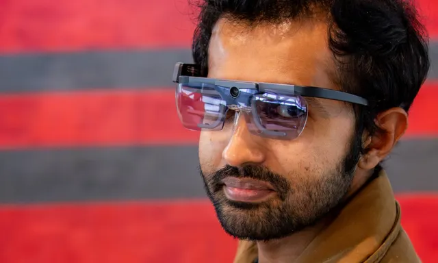
For organisations
Hire a researcher who ships
XR strategy, immersive UX testing and EdTech advice. Fixed scope, fixed fee.
Book a discovery call →What brings you here?
Research-grade help for teams building immersive and learning products: an XR Opportunity Sprint, immersive UX and playtest evaluation, or EdTech advice. Fixed scope, fixed fee.
Keynotes and workshops on multiplayer AR, spatial computing and why teams reach for the wrong answer to conflict, each one grounded in peer-reviewed research.
40 free interactive lessons from the Master of Business Informatics courses I teach. They run in your browser, with no sign-up. Thinking about a master's or PhD in New Zealand? I can help you plan it.
Peer-reviewed research on location-based and multiplayer AR with Sony Interactive Entertainment and Niantic, a free AR design playbook, and a book on why the “right” answer to conflict is usually wrong.
Four ways in. Every page on this site sits behind one of these doors, so you never have to hunt through the menu.

XR strategy, immersive UX testing and EdTech advice. Fixed scope, fixed fee.
Book a discovery call →Multiplayer AR, spatial computing and workplace conflict, for audiences who make things.
Invite me to speak →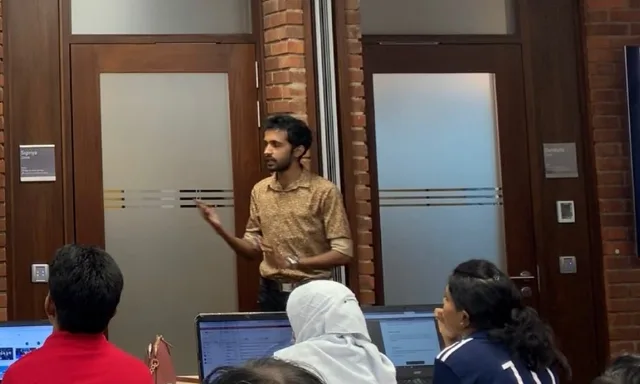
40 free interactive lessons, and honest advice on studying in New Zealand.
Peer-reviewed AR and HCI studies, a free design playbook, and a book on conflict.
Explore the research →Something else, or not sure which? Send me a message →
Thousands of learners across universities, MOOCs and workshops — from Colombo to Christchurch.
…
I'm Dr. Yasas Sri Wickramasinghe — a Postdoctoral Researcher at HIT Lab NZ (University of Canterbury), Senior Lecturer at Yoobee College of Creative Innovation, and the founder of ICT Campus, an online A/L ICT classroom for Sri Lankan students. I hold a PhD in Human Interface Technology, with a dissertation on designing multiplayer location-based AR games that connect remote players and places.
My work is conducted with industry partners including Sony Interactive Entertainment (Japan) and Niantic, Inc. Earlier I co-founded NavitaZ VR Labs under the MIT Global Startup Labs programme and served as Platform Lead for the Software Engineering strand of Sri Lanka's first large-scale MOOC platform, scaling it to 150,000+ registered learners. I also taught at the University of Moratuwa's Faculty of Information Technology, and spent four years as Technical Lead & Senior Software Engineer at 99X Technology.
Online tuition for A/L ICT, taught by me, in Sinhala and English — plus a second programme that carries students past their A/Ls and into university.
Live online classes for Sri Lankan A/L ICT — Grades 12 & 13, the full NIE syllabus, in Sinhala and English medium.
“Your degree assumes you already know this. Nobody taught you.”
A 12-week programme for the long wait between A/L results and the first lecture — the computer and research skills every university student needs, taught in Sinhala.
I did my PhD at the University of Canterbury, I teach postgraduate students in New Zealand, and I came here from Sri Lanka myself. Tell me where you are and where you want to go — the more you share, the more useful my reply will be.
Taught or research master's — choosing a programme, entry requirements, costs and scholarships.
Finding a supervisor, shaping a research proposal, and doctoral scholarships.
Independent guidance from me personally — not on behalf of any university, and not immigration advice. For costs, courses and scholarships, PathFinder is also free to use.
Consultations, speaking invitations, writing, and a student community — in one place, at yasassri.me/app.
30–45 min on education, research or career guidance — no charge.
Signature talks, a ready-to-use speaker kit, and invitations.
Writing on HCI, AR/VR, software engineering and education.
Ask questions, help peers, and stay connected as a community.
Where spatial computing meets human behaviour — grounded in peer-reviewed studies and industry deployment.
Designing multiplayer AR experiences that meaningfully connect remote players to real-world places.
Studying how immersive interfaces reshape cognition, trust, and decision-making in shared spaces.
Evaluating how people feel, behave, and collaborate inside the systems we design and deploy.
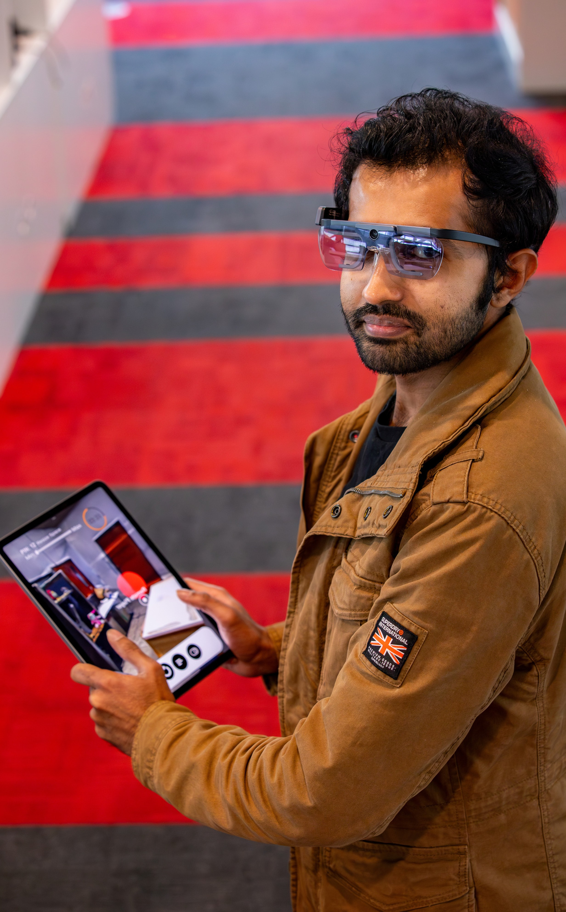
A multiplayer location-based AR system, designed and evaluated with Sony Interactive Entertainment, exploring how players experience and represent distant real-world places together — published across leading HCI venues.
Read the Research →Why the “right” answer to conflict is usually wrong
Conflict shows up in every team, every project, every workplace — and almost everyone reaches for the same answer: collaborate, find the win-win. This book argues that reflex is usually wrong, using forty-five real, anonymised workplace conflicts to show when collaboration works, when it backfires, and what to do instead.
Get the Book →Free download · sign in required · takes under a minute
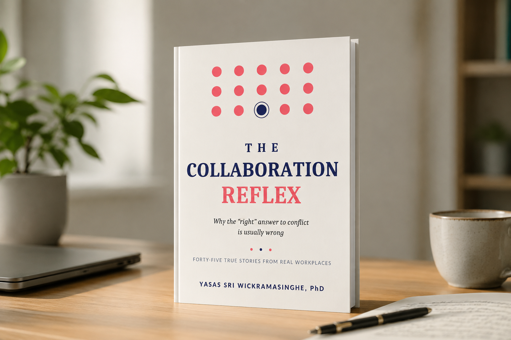
Three engagements on the calendar — or invite me for something similar.
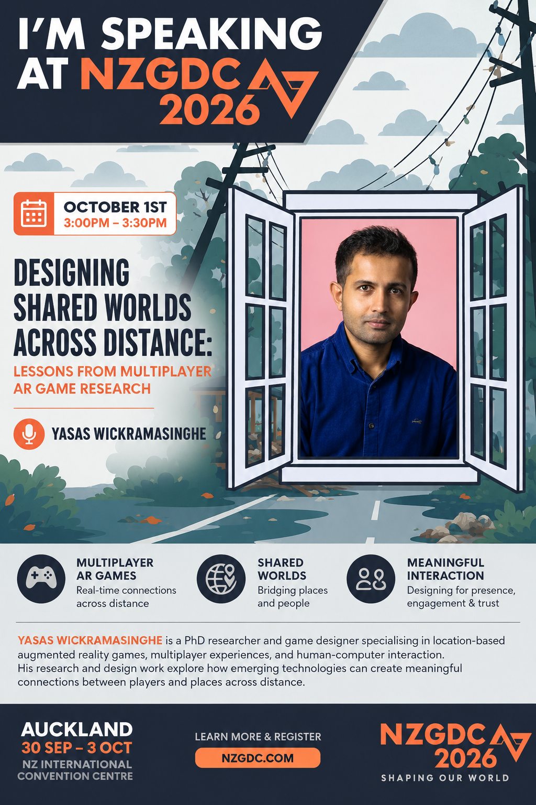
Conference Talk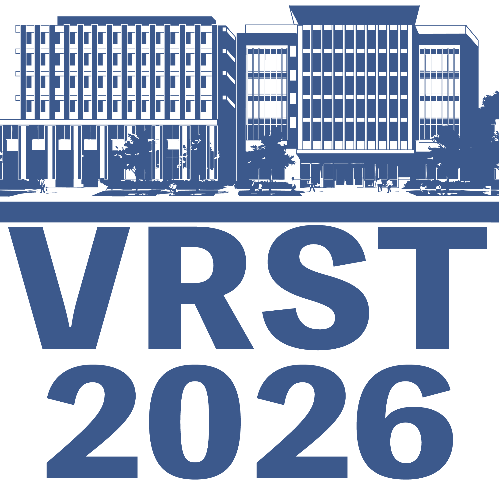
Conference Paper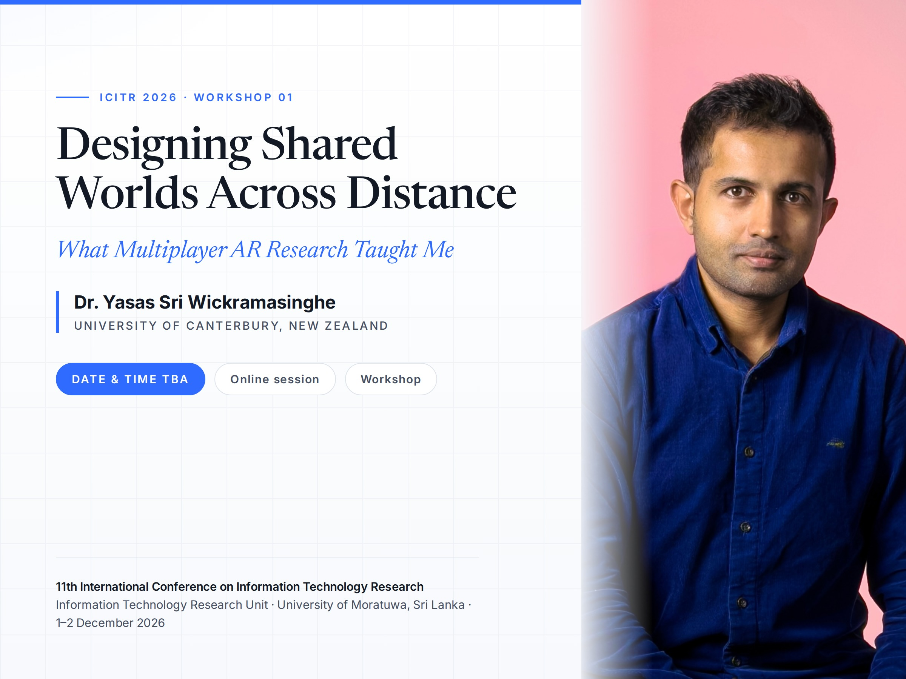
WorkshopTalks and workshops delivered this year — the material and demos are still online.
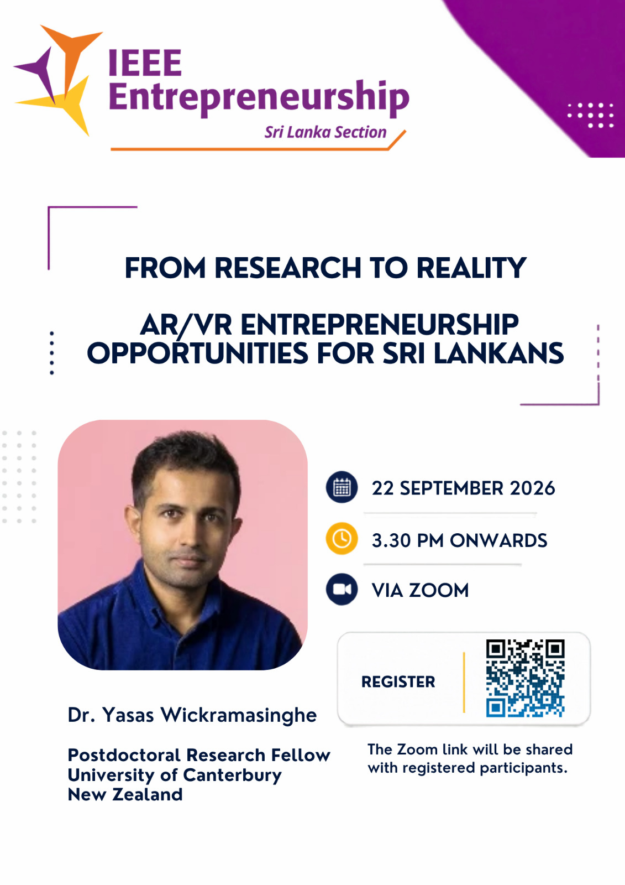
Past Event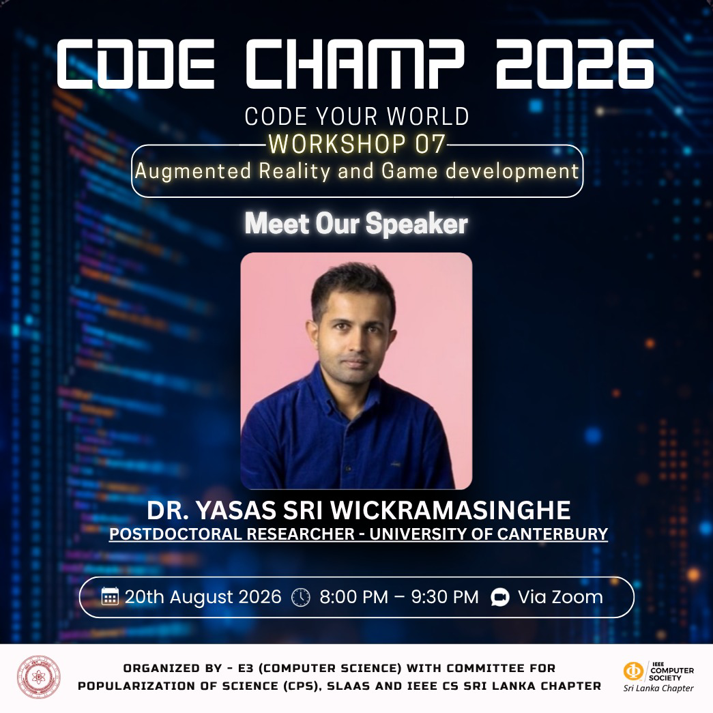
Past Event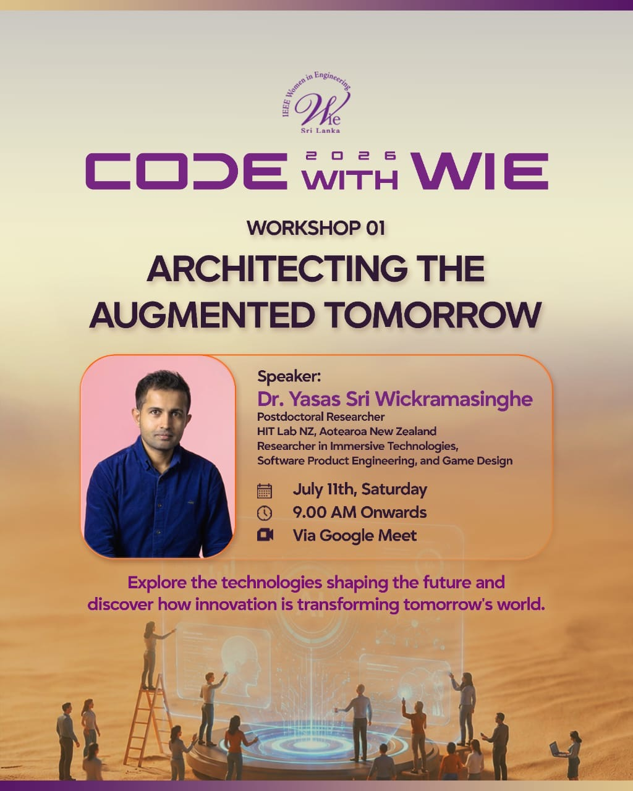
Past EventInvited talks, international collaborations and outreach — where the research meets people and places.
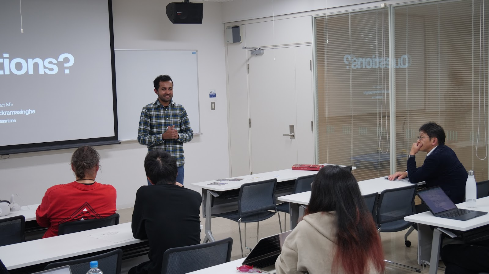
Collaboration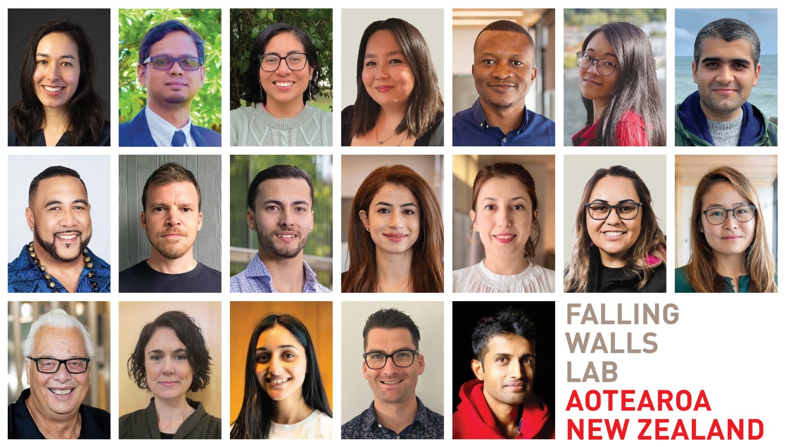
Falling Walls Lab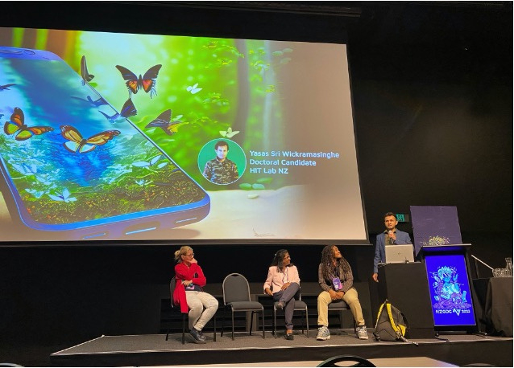
NZGDC 2023When I'm not researching AR or teaching, I'm usually somewhere new with a camera. Follow along on Instagram @yasassri.me.
Rigorous academic research, hands-on engineering, and high-engagement postgraduate teaching.
Peer-reviewed work in AR, XR and HCI — from study design and experimental platforms to journal and conference papers.
Learn more →Master's-level courses in information systems and project management, plus capstone and thesis supervision — gamified and high-engagement.
Learn more → For prospective students →Building immersive prototypes and production systems with Unity, OpenXR and Niantic Lightship — drawing on a senior engineering background.
Learn more →Consulting, team workshops and keynotes on immersive technology, XR user research and engaged learning — evidence-led, with a fixed scope agreed up front.
Work with me →For an immersive or learning project, a team workshop, a keynote or a research collaboration — see how I work, or just say hello.
Dr. Yasas Sri Wickramasinghe is an augmented reality researcher, university lecturer and software engineer based in Christchurch, New Zealand. He is a Postdoctoral Researcher at HIT Lab NZ (University of Canterbury) and a Senior Lecturer at Yoobee College of Creative Innovation.
His research focuses on location-based augmented reality (AR), spatial computing and human-computer interaction (HCI) — in particular multiplayer AR games that connect remote players and places, conducted with industry partners including Sony Interactive Entertainment and Niantic.
He is a Senior Lecturer at Yoobee College of Creative Innovation, teaching postgraduate information systems and project management, including the Master of Business Informatics (MBI) programme across the Auckland and Christchurch campuses. See his guide for prospective students for programme details.
He has designed and built HouseScout (a property-intelligence dashboard for Christchurch home buyers), PathFinder (a planning platform for Sri Lankan students applying to postgraduate study in New Zealand) and Faro (a machine-learning flight-fare timing assistant). See the Products page.
Organisations can request a discovery call on the Work With Me page, event organisers will find talks and a speaker kit on the Speaking page, and anyone can use the contact page for research collaborations, mentorship and general questions.
Yes. For organisations he offers an XR Opportunity Sprint, immersive UX and playtest evaluation, and EdTech advisory; hands-on team workshops on topics from web security and Agile to machine learning and AI-assisted building; and keynotes on multiplayer AR, spatial computing and workplace conflict. Engagements are scoped with a fixed fee agreed up front and run remotely worldwide or in person in New Zealand.